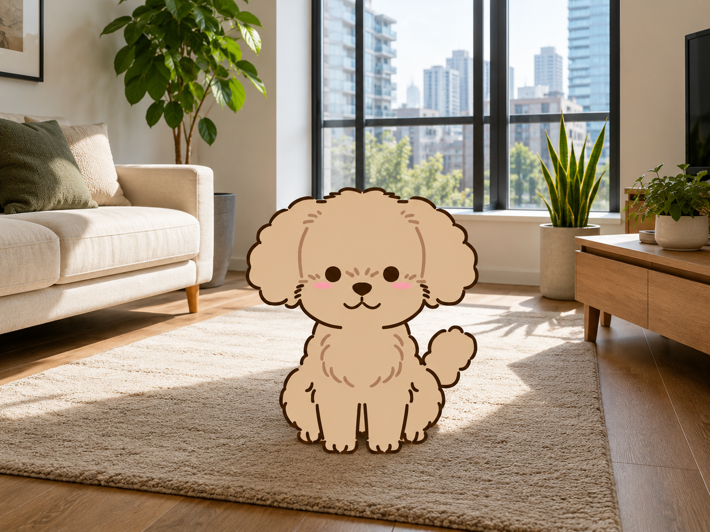

導入事例A: 共働き家庭の記録定着

導入前の課題: 朝晩の世話が分担され、食事量や体調変化の共有が曖昧になっていました。
活用した機能: 体重・食事・運動の記録を家族で共有。1日1回の入力リマインドを設定。
導入後の変化: 3週目で記録の抜け漏れが減少。食欲低下の兆候を早期に把握し、受診判断がスムーズになりました。
実際の活用シーンと成果指標をまとめています。

導入前の課題: 朝晩の世話が分担され、食事量や体調変化の共有が曖昧になっていました。
活用した機能: 体重・食事・運動の記録を家族で共有。1日1回の入力リマインドを設定。
導入後の変化: 3週目で記録の抜け漏れが減少。食欲低下の兆候を早期に把握し、受診判断がスムーズになりました。
導入前の課題: 夜間に軽い不調が出た際、様子見と受診の判断に毎回迷いがありました。
活用した機能: AI症状チェックで重症度を確認し、推奨アクションからオンライン相談へ接続。
導入後の変化: 受診判断までの時間を短縮。必要時のみ相談予約する運用が定着し、家族の不安が軽減しました。
92%（3か月時点）
最短3分（症状チェック利用時）
4.7/5.0（利用者アンケート）